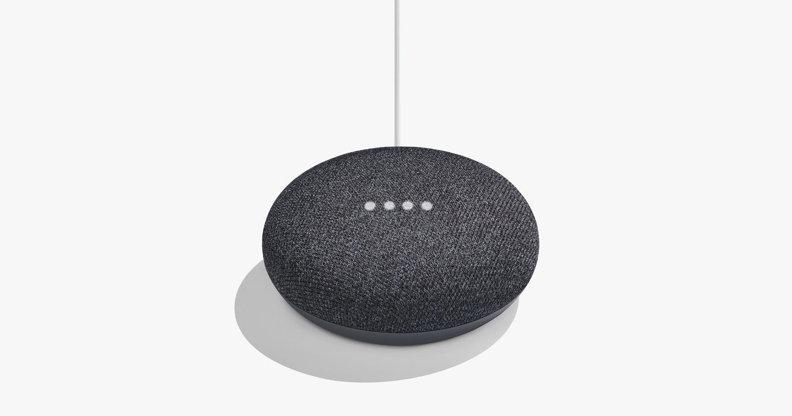
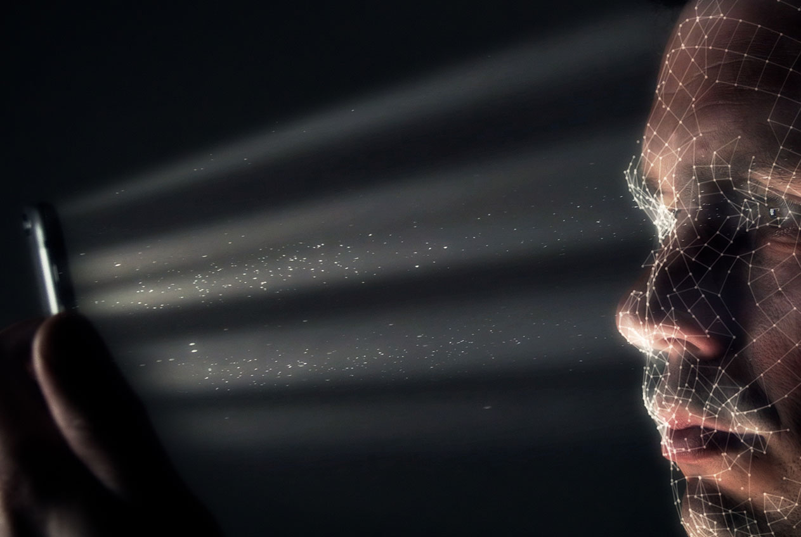
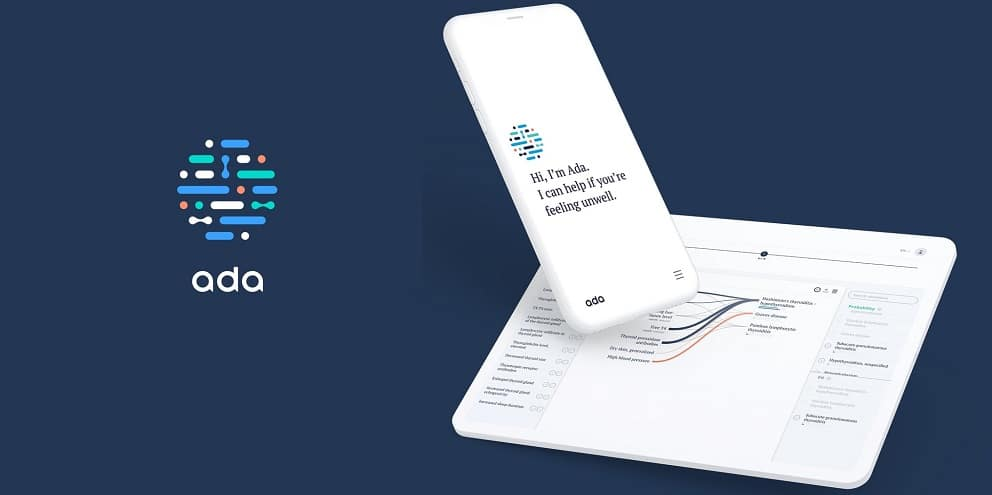

1-Sophia may be a social humanoid robot created by Hong Kong-based company Hanson Mechanical technology. Sophia was to begin with turned on on February 14, 2016, and made her to begin with open appearance at South by Southwest Celebration (SXSW) in mid-March 2016 in Austin, Texas, Joined together States. Sophia has been secured by media around the globe and has taken part in numerous high-profile interviews. In October 2017, Sophia "got to be" a Saudi Middle eastern citizen, the primary robot to get citizenship of any nation. In November 2017, Sophia was named the Joined together Countries Improvement Programme's to begin with ever Development Winner, and is the primary non-human to be given any Joined together Country title

2-Some people are unable to live without the voice assistant. These tools, such as: "Siri" and "Alexa" to "Google Home" and "Cortan", help you find places you want to go to for food, for example, or to inquire about the weather during the weekend, through the use of artificial intelligence To address the language and return the answers to you.
3-Unlock your phone through face ID One of the first things many people do every morning is accessing their smartphones. And when your device is unlocked with biometrics like a facial ID, it uses artificial intelligence to enable this functionality. Apple's "FaceID" can see 3D. It lights up your face and places an invisible 30,000 infrared dots on it and takes a picture, then uses machine learning algorithms to compare wiping your face with what is stored around your face to determine if the person is trying to unlock The phone is you or not Apple says the chance to deceive FaceID is one in a million.
4-Ada your health guide, You can tell Ada how torment or side effects you're feeling to assist you and donate you the vital exhortation, through a individual intelligently chat that Ada inquires straightforward questions and compares your answers with thousands of comparative circumstances to assist you discover conceivable clarifications for what you feel. Ada was created by a huge bunch of specialists and researchers to recognize a wide run of diseases and indications, from colds to uncommon diseases. After your assessment, Ada will recommend what you'll do and this may incorporate going by a specialist, pharmacist or specialist, or asking crisis care, and the app permits you to print your health reports or share them together with your specialist.
